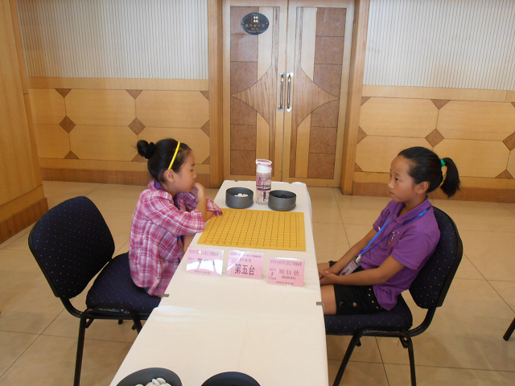
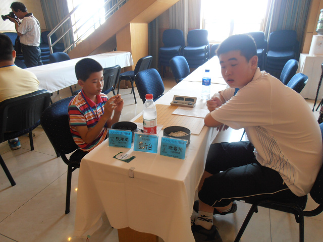

2012全少赛回忆录之三鏖战秦皇岛（一）
#1 2012全少赛回忆录之三鏖战秦皇岛（一）作者：黄药师 发表时间：2012-7-28 15:08:53
15日晚上到达秦皇岛国贸酒店，将41人全部安排妥当后，有志前往开领队会。回来以后带回几个条信息，第一，这次比赛除了儿童乙组比赛不需 要记谱，儿童甲组和少年组都要记谱；第二，除了男子乙组进行9轮积分赛外其他组别都是7轮积分赛。第三条，胡瑜重出江湖.对于第一条信息，出了 惊讶外并没有让人惊慌，因为我们平时孩子们都会记谱。第二条是个问题，9轮和7轮的差别很大，7轮意味着翻身的机会变小了。至于第三条，胡瑜的 确不熟悉，只是听说而已，何况去年少年男子组已经遭受了前所未有的打击，还有什么可怕的呢？由于第一轮对阵还没有出来，现在也不好和孩子们说 什么，只是让他们好好休息。
16日上午，开幕式结束之后，第一轮的对阵出来了，看到这个对阵感到无比头疼。在所有6个组别中，我们几个教练心中都有数，少年男子组我们的 1+2，邓伟是多年老队员，比较沉稳，其他2个还很嫩。少年女子组是2+2，陆梦溪是去年儿童女子组冠军，顾铃也是多年老队员，这俩人在这里还是比 较放心的，另外2个新手要看发挥，有希望冲击好名次。总得来说，少年组人比较少，对手也比较明朗，选手比较稳定，所以反而要准备的比较简单。 我们更多的是关注儿童的四个组。
首先看到的是儿童男子甲组，这是我们的传统弱势项目，这次我们的队员除李子珩其他都是新手。第一轮，蔡吉吉（浙江宁波）VS李子珩，吕泽安（ 石家庄）VS陈抱朴，赵黄一VS金子灿（秦皇岛），康海宁（石家庄）VS周楠，周秦汉（浙江台州）VS李佳辉。除了赵黄一的对手，其他对手都是熟悉 的，感觉上李子珩略胜一筹，陈抱朴有点危险，对方毕竟是参加了几届比赛的老队员，赵黄一应该可以拿下（结果这小子让我们几个教练的眼镜碎了一 地），李佳辉估计要输，集训这一段时间他的状态很不好，而且对方是09年就参加比赛的老队员了。而儿甲男第一轮的焦点是周楠pk康海宁（石家庄） ，对方是去年儿童男子组第四，也是一名老队员，实力和经验都占优，周楠正式学棋才八个月，但是在集训赛时候表现出来的状态是令人惊叹的。然后 我们悲剧的发现，这个组第一轮全是对方开局。
儿童女子甲组，这是我们的传统强项，这次我们派了8名选手参加，其中3名老队员。第一轮对阵出来了，我就悲催的发现，有2桌内讧，其中徐颖vs 胡嘉瑶的对局是是关键，胡嘉瑶虽然也是新手，棋龄不足1年，但是集训时候的水平已经逼近陆梦溪等人，徐颖绝对不敢大意。她们俩平时在学校里面 就是难分伯仲，值得关注。而陈聆博vs钱竹韵是俩新手，看她们自己发挥吧，陈幸和陈璐宁俩老队员的对手不熟悉，不过应该问题不大。本轮重点看李 晨荣（石家庄）vs赵悦，李晨荣也是个参加多年的老队员，去年老爱玩流浪者的梦，难道今年…………。
儿童男子乙组，唐世祺vs郑心锐（石家庄），郑心锐也是一名老队员，虽然年龄不大，但是已经参加了2次全少赛，1次全国校际交流赛，不容小视。 唐世祺的棋龄也是不足1年，经验上没有法比，但是他有一股锐气，希望他能冲击一下。赵基智Vs沈昕（浙江宁波），我们教练组感觉应该赵基智占优 ，然后比完后，我们几个教练的备用眼镜也都碎了一地，这是后话了。其他2名队员的对手不熟悉，看他们自己拼吧。
儿童女子乙组，王姚瑶vs顾钰斅，又一内讧。其他3人的对手都不熟悉，下下看吧！
16日下午，1时30分，2012年全国少年儿童五子棋锦标赛正式开赛。15分钟的拍照时间过后，家长教练都被赶在门外，我们又开始了一年一度的焦急 等待。少男组，第一轮全军覆没，邓伟输给了浙江宁波的选手，基本属于正常，有点小失望。少女组波澜不惊，第一轮的重头戏不在我们的选手是刘昭 （秦皇岛）vs郑逸宁（浙江宁波），一个是两届全少赛冠军，一个是去年全少赛亚军。最后亚军战胜了冠军，郑逸宁的棋风给我的感觉像男生，攻击性 很强，胜了刘昭之后，她下面只要拿下我们的选手就可以问鼎了，会如她所愿吗？
儿童男子甲组，李子珩胜，陈抱朴胜（这是个惊喜），赵黄一输，瑞星二打对方打错了，他居然没有杀出来，自己把自己搞死了，教练组集体无语 。李佳辉输了，预料之中。周楠和康海宁的比赛是所有比赛最后一个结束的，大概下了1小时30分，周楠胜出。儿童女子甲组，徐颖和胡嘉瑶和棋，果 然谁也搞定对方，钱竹韵在内讧中胜了陈聆博，陈幸、陈璐宁正常胜出，王宇输了，对方是秦皇岛的多年老队员，也正常。至于赵悦，对方果然玩流浪 者的梦，赵悦果断变化，进入中盘，赵悦胜，赵悦棋龄也不足一年，但是一名很有耐心的选手。
儿童男子乙组，唐世祺速胜对手（惊喜），赵基智输了，回来一复盘，我们几个教练第二次无语，其他2个小男生都胜了。儿童女子乙组，内讧中， 顾钰斅想小骗王姚瑶，结果被识破，输了。其他三个小女生都胜利。
第一轮，除了让我们摔了2副眼镜，其他还都属于正常。
吕泽安（石家庄）VS陈抱朴
李晨荣（石家庄）vs赵悦
康海宁（石家庄）VS周楠
赵黄一VS金子灿（秦皇岛）

王姚瑶vs顾钰斅 内战
2011年全少赛亚军郑逸宁vs2007年、2011年全少赛冠军刘昭

2010年、2011年全少赛冠军张建业vs2007年全少赛冠军徐嘉琦
胡瑜难道在祈祷？？？？他还需要祈祷吗
［此帖子已被 黄药师 在 2012-7-28 15:18:53 编辑过］
［此帖子已被 黄药师 在 2012-7-28 15:19:57 编辑过］
［ 陈国良 于 2012-7-28 15:28:01 时花20金币送鲜花一朵］
［ 茗弈宽容 于 2012-8-1 13:21:19 时花20金币送鲜花一朵］
［ 茗弈宽容 于 2012-8-1 13:21:19 时花20金币送鲜花一朵］
［ 茗弈宽容 于 2012-8-1 13:21:19 时花20金币送鲜花一朵］
［ 掌棋如烟 于 2012-8-1 17:41:03 时花20金币送鲜花一朵］
［ 掌棋如烟 于 2012-8-1 17:41:03 时花20金币送鲜花一朵］
［ 掌棋如烟 于 2012-8-1 17:41:03 时花20金币送鲜花一朵］
［ 掌棋如烟 于 2012-8-1 17:41:03 时花20金币送鲜花一朵］
［ 掌棋如烟 于 2012-8-1 17:41:03 时花20金币送鲜花一朵］
［ 一期一会 于 2012-8-1 22:39:04 时花20金币送鲜花一朵］
#2 Re:2012全少赛回忆录之三鏖战秦皇岛（一）作者：陈国良 发表时间：2012-7-28 15:28:34

#3 Re:2012全少赛回忆录之三鏖战秦皇岛（一）作者：黄药师 发表时间：2012-7-28 15:30:16
体型相差太大了！
#4 Re:2012全少赛回忆录之三鏖战秦皇岛（一）作者：茗弈宽容 发表时间：2012-8-1 13:20:47
祝贺这次南通取得优异成绩！药师辛苦了！小喷油们前途无限！！！